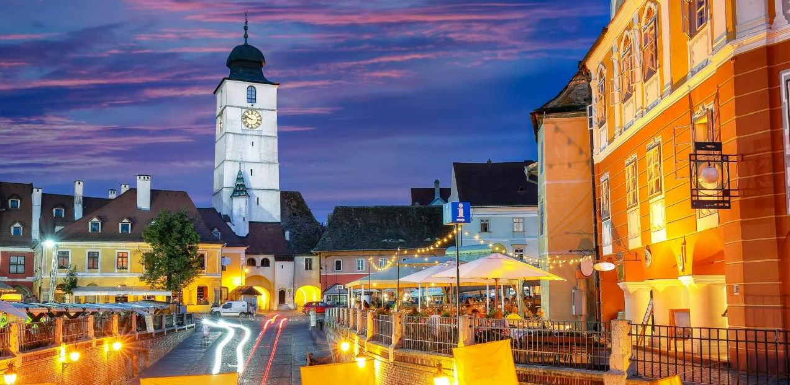
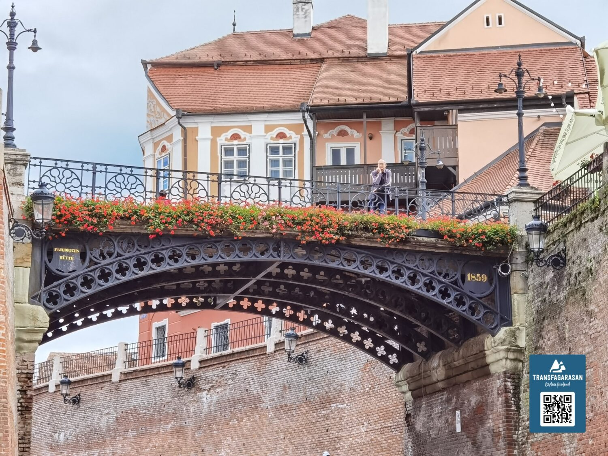
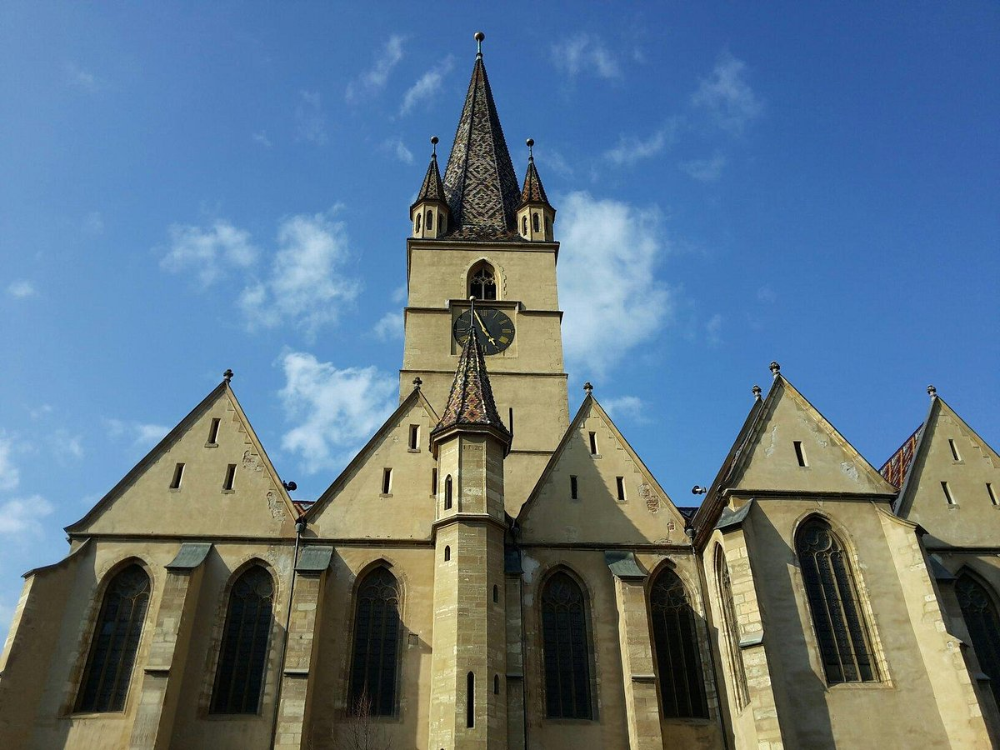
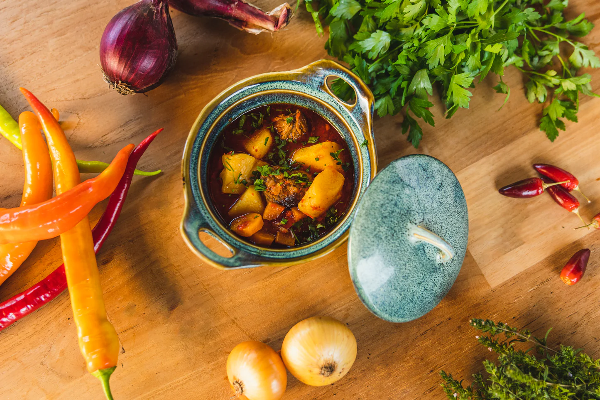
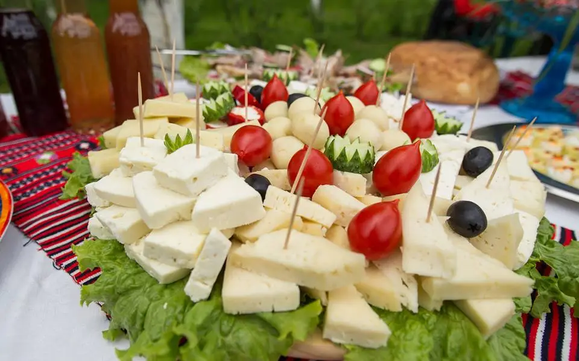
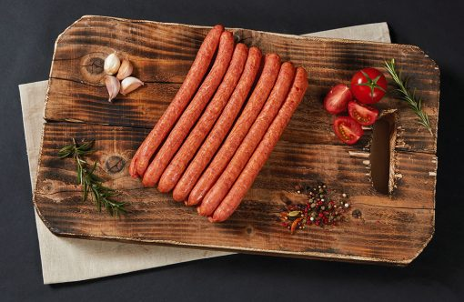

Sibiu is one of Romania’s most charming and culturally vibrant cities, deeply rooted in its 12th-century German Saxon heritage. Originally named Hermannstadt, it is famous for its uniquely preserved medieval old town, divided beautifully into the historic Upper Town and the quaint Lower Town.






Sibiu is the undisputed cultural capital of Romania, and the crown jewel of its artistic calendar is FITS. It is one of the top three largest and most prestigious performing arts festivals in the entire world. For ten days (usually in June), the entire city transforms into a massive open-air stage. You can experience everything from world-class indoor theater productions and contemporary dance to dramatic, fiery street performances, acrobats, and light shows that take over the historic squares.
Located just outside the city center in the Dumbrava Forest, the ASTRA National Museum Complex is one of the largest and most beautiful open-air museums in Europe. Spreading around a massive lake, it features hundreds of genuine, historic peasant homes, working wooden windmills, watermills, blacksmith shops, and wooden churches brought here from every corner of Romania. Walking its pathways feels exactly like stepping back in time, and you'll frequently encounter local artisans conducting live workshops, folk music performances, and traditional cooking fairs.
To experience daily life like a local, spend an evening practicing the traditional European stroll through Sibiu's three interconnected historic spaces: the Large Square (Piața Mare), the Small Square (Piața Mică), and Huet Square (Piața Huet). You can grab a coffee or a local craft beer on an outdoor terrace, watch the sunset light up the pastel-colored medieval houses, and feel the unique sensation of the iconic "houses with eyes" watching you from the rooftops as the squares come alive with street musicians and community energy.